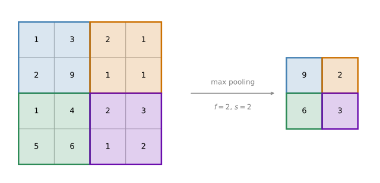
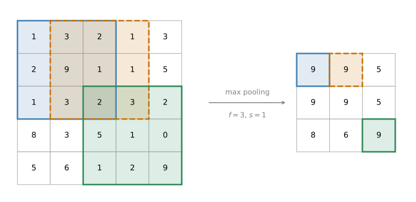
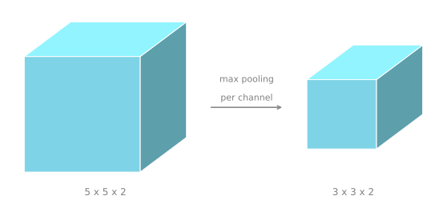
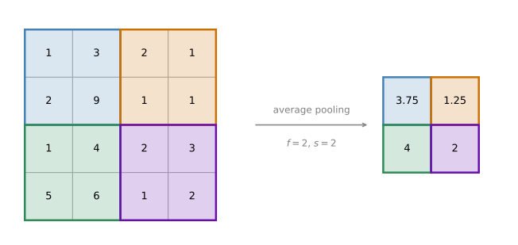

Pooling Layers
deep-learning
convolutional-neural-networks
computer-vision
pooling
How max pooling shrinks a representation and keeps the strongest feature responses, how average pooling differs, and why pooling has hyperparameters but no parameters.
Other than convolutional layers, ConvNets often also use pooling layers to reduce the size of the representation, to speed up the computation, and to make some of the features they detect a bit more robust. This page goes through an example of pooling first, and then talks about why you might want to do it.
Max Pooling
Suppose you have a 4 by 4 input, and you want to apply a type of pooling called max pooling. The output of this particular implementation of max pooling is a 2 by 2 output.
The way you do that is quite simple. Take the 4 by 4 input and break it into different regions, colored here in four different colors. Each of the outputs in the 2 by 2 result is just the maximum from the corresponding shaded region.
The maximum of the four blue numbers is 9. The maximum of the orange numbers is 2. In the lower left the biggest number is 6, and in the lower right the biggest number is 3.
To compute each of the numbers on the right, you took the maximum over a 2 by 2 region. So this is as if you applied a filter size of 2, because you are taking 2 by 2 regions, and a stride of 2. Those are exactly the hyperparameters of max pooling. The 2 by 2 region gives you the 9, then you step two positions across to the region that gives you the 2, then for the next row you step down two positions to give you the 6, and then step right by two positions to give you the 3. Because the squares are 2 by 2, \(f = 2\), and because you stride by two, \(s = 2\).
Intuition Behind Max Pooling
Here is the intuition behind what max pooling is doing. If you think of this 4 by 4 region as some set of features, the activations in some layer of the neural network, then a large number means that a particular feature was probably detected. So the upper left quadrant has this particular feature, which might be a vertical edge, or a whisker if you are trying to detect a cat. Clearly, that feature exists in the upper left quadrant.
Whereas some other feature, maybe a cat eye detector, does not really exist in the upper right quadrant. What the max operation does is say that if a feature is detected anywhere in one of these quadrants, then it remains preserved in the output of max pooling. If the feature is detected anywhere in the filter region, keep a high number. But if the feature is not detected, so it does not exist in that quadrant, then the maximum of all those numbers is still itself quite small.
That is maybe the intuition behind max pooling. It has to be admitted, though, that the main reason people use max pooling is that it has been found in a lot of experiments to work well. The intuition just described is often cited, but nobody fully knows whether it is the real underlying reason that max pooling works well in ConvNets.
One interesting property of max pooling is that it has a set of hyperparameters but it has no parameters to learn. There is nothing for gradient descent to learn. Once you fix \(f\) and \(s\), it is just a fixed computation, and gradient descent does not change anything.
Example With Different Hyperparameters
Here is an example with different hyperparameters. Take a 5 by 5 input and apply max pooling with a filter size of 3 by 3, so \(f = 3\), and a stride of 1, so \(s = 1\). In this case the output size is 3 by 3.
The formulas developed earlier for the output size of a convolutional layer also work for max pooling. That is, the output side length is
\[ \left\lfloor \frac{n + 2p - f}{s} + 1 \right\rfloor \]
which for this example gives \((5 - 3)/1 + 1 = 3\).

The upper left element comes from the 3 by 3 blue region, whose maximum is 9. Then the window shifts over by one, because the stride is 1, and the maximum in the orange region is again 9. Shift it over once more and the maximum is 5. Going on to the next row, stepping down by one, the maxima are 9, then 9, then 5 again, where the region now contains two fives. Finally, in the last row the maxima are 8, then 6, and then the 9 in the bottom right corner.
Pooling on Volumes
So far max pooling has been shown on 2D inputs. If you have a 3D input, then the output has the same number of channels. For example, if you have a 5 by 5 by 2 input, then the output is 3 by 3 by 2, and the way you compute it is to perform the computation just described on each of the channels independently.
The first channel stays as it was above, and for the second channel you do the same computation on that slice of the volume, which gives the second slice of the output. More generally, if the input were 5 by 5 by some number of channels, then the output would be 3 by 3 by that same number of channels. The max pooling computation is done independently on each of these \(n_c\) channels.

Review Questions
1. What are the hyperparameters of a max pooling layer?
TipAnswer
The filter size \(f\) and the stride \(s\), plus the choice between max pooling and average pooling. Padding \(p\) is also possible in principle, but it is very rarely used and is almost always 0.
1. A 28 by 28 by 6 volume goes through max pooling with \(f = 2\) and \(s = 2\). What comes out?
TipAnswer
\(\lfloor (28 - 2)/2 + 1 \rfloor = 14\), so the output is 14 by 14 by 6. Pooling halves the height and the width and leaves the number of channels alone, because it is applied to each channel independently.
1. Why does gradient descent have nothing to learn in a pooling layer?
TipAnswer
Because pooling has no weights and no biases. Once \(f\) and \(s\) are fixed, taking the maximum of a region is a fixed computation with no adjustable numbers in it.
1. You have an input volume that is 66 by 66 by 21, and apply max pooling with a stride of 3 and a filter size of 3. What is the output volume?
\(22 \times 22 \times 7\)
\(66 \times 66 \times 7\)
\(22 \times 22 \times 21\)
\(21 \times 21 \times 21\)
TipAnswer
c. The same output size formula applies, \(\lfloor (66 - 3)/3 + 1 \rfloor = 21 + 1 = 22\). Pooling is applied to each channel separately, so the 21 channels come out as 21 channels. Nothing in a pooling layer ever changes the number of channels.
Average Pooling
There is another type of pooling that is not used very often, called average pooling. It does pretty much what you would expect. Instead of taking the maximum within each filter region, you take the average.

The average of the four numbers in the blue region is 3.75, the average in the orange region is 1.25, and the two regions in the bottom row give 4 and 2. This is average pooling with hyperparameters \(f = 2\) and \(s = 2\), and other hyperparameters can be chosen just as well.
These days max pooling is used much more often than average pooling, with one exception. Sometimes, very deep in a neural network, you might use average pooling to collapse the representation, going for example from 7 by 7 by 1000 down to 1 by 1 by 1000 by averaging over all the spatial positions. An example of that comes up later. But in general you see max pooling used much more in a neural network than average pooling.
Summary of Pooling
To summarize, the hyperparameters for pooling are \(f\), the filter size, and \(s\), the stride. Common choices might be \(f = 2\) and \(s = 2\), which is used quite often and has the effect of shrinking the height and the width of the representation by a factor of two. You also see \(f = 3\) and \(s = 2\) used. The other hyperparameter is just a binary bit that says whether you are using max pooling or average pooling.
If you want, you can add an extra hyperparameter for the padding, although this is very, very rarely used. When you do max pooling, usually you do not use any padding, and one exception to that appears later. For the most part max pooling uses no padding, so the most common value of \(p\) by far is \(p = 0\).
Given an input volume of size
\[ n_H \times n_W \times n_c \]
pooling outputs a volume of size
\[ \left\lfloor \frac{n_H - f}{s} + 1 \right\rfloor \times \left\lfloor \frac{n_W - f}{s} + 1 \right\rfloor \times n_c \]
assuming there is no padding. The number of input channels equals the number of output channels, because pooling applies to each channel independently.
One thing to note again about pooling is that there are no parameters to learn. When you implement backpropagation, you find that there are no parameters that backpropagation will adapt through max pooling. Instead, there are just these hyperparameters that you set once, maybe by hand or maybe using cross-validation, and beyond that you are done. It is just a fixed function that the neural network computes in one of its layers, and there is genuinely nothing in it to learn.
Review Questions
1. What is the difference between max pooling and average pooling, and which one is used more?
TipAnswer
Max pooling takes the largest value in each region, while average pooling takes the mean of the region. Max pooling is used much more often. Average pooling shows up mainly very deep in a network, for example collapsing a 7 by 7 by 1000 volume down to 1 by 1 by 1000.
1. Why does pooling not change the number of channels?
TipAnswer
Because the pooling computation is carried out separately on each channel. Each input channel produces exactly one output channel, so \(n_c\) passes through unchanged.
1. A pooling layer has \(f = 3\), \(s = 2\), and no padding, applied to a 15 by 15 by 8 volume. What is the output shape?
TipAnswer
\(\lfloor (15 - 3)/2 + 1 \rfloor = 7\), so the output is 7 by 7 by 8.
1. Which of the following are hyperparameters of the pooling layers? Choose all that apply.
Average weights.
Whether it is max or average.
Filter size.
Number of filters.
TipAnswer
b and c, along with the stride \(s\), which is not listed. Max and average are the two kinds of pooling, and choosing between them is a hyperparameter, as is the filter size \(f\), although \(f\) and \(s\) are usually set equal. Option a is not a thing, since pooling has no weights at all. Option d belongs to a convolutional layer, because pooling never changes the number of channels and so has no filter count to choose.
You now know how to build convolutional layers and pooling layers. The next section puts them together with fully connected layers into a more complete example of a ConvNet.